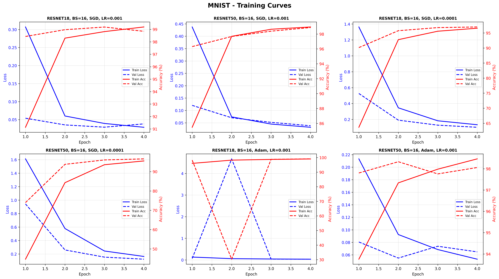
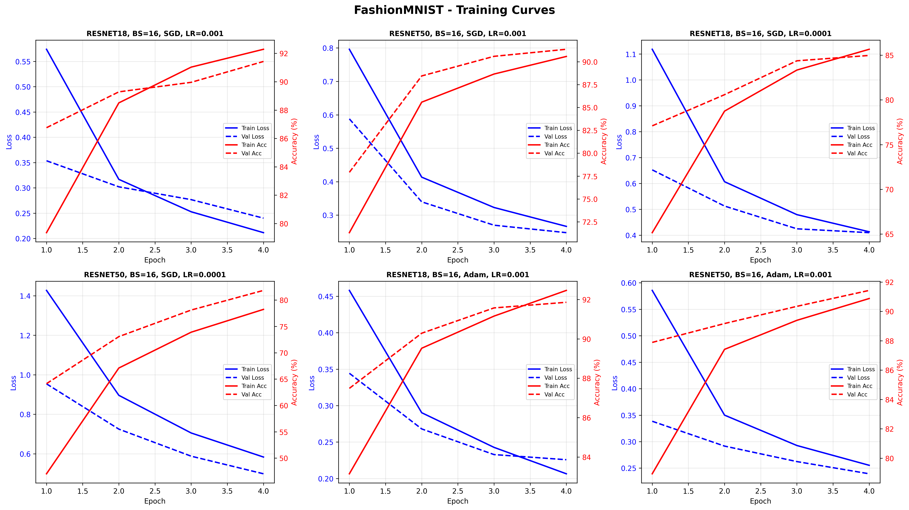
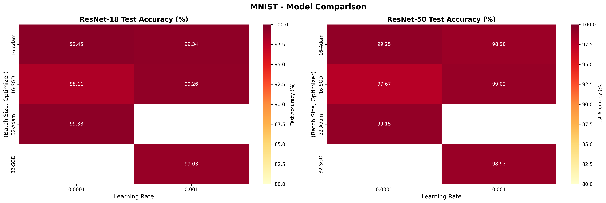
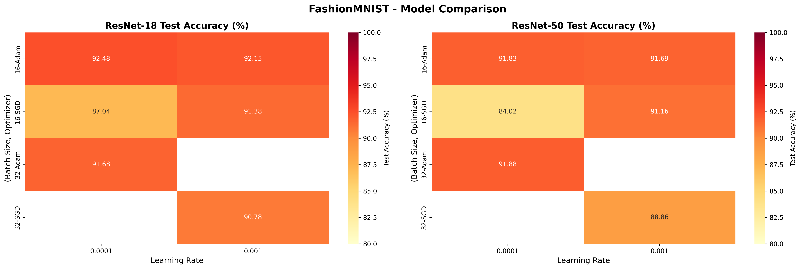
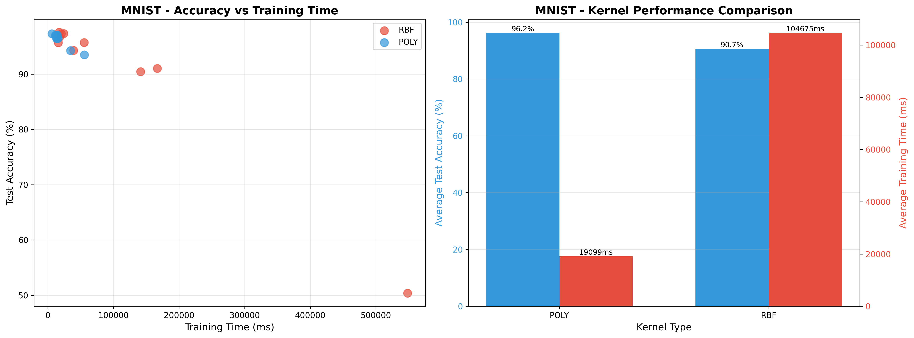
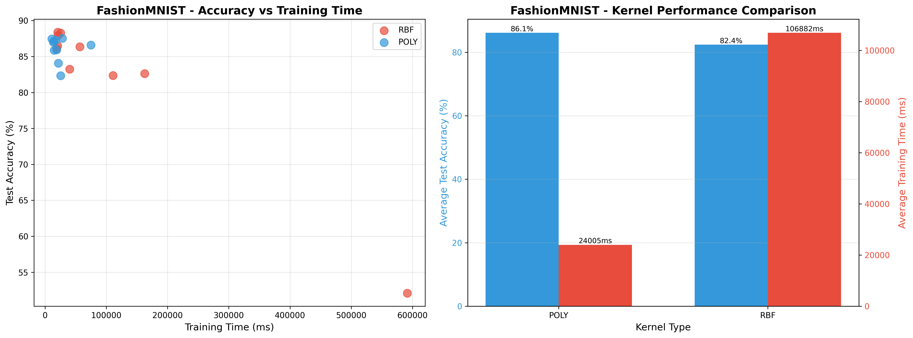
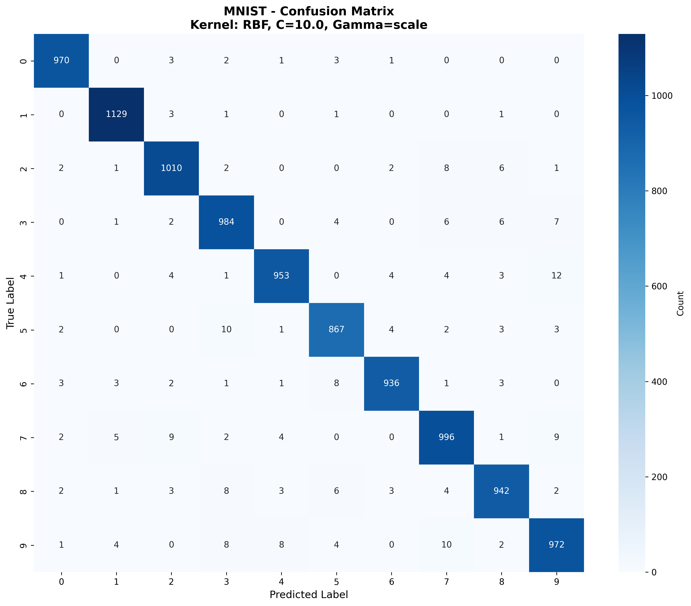
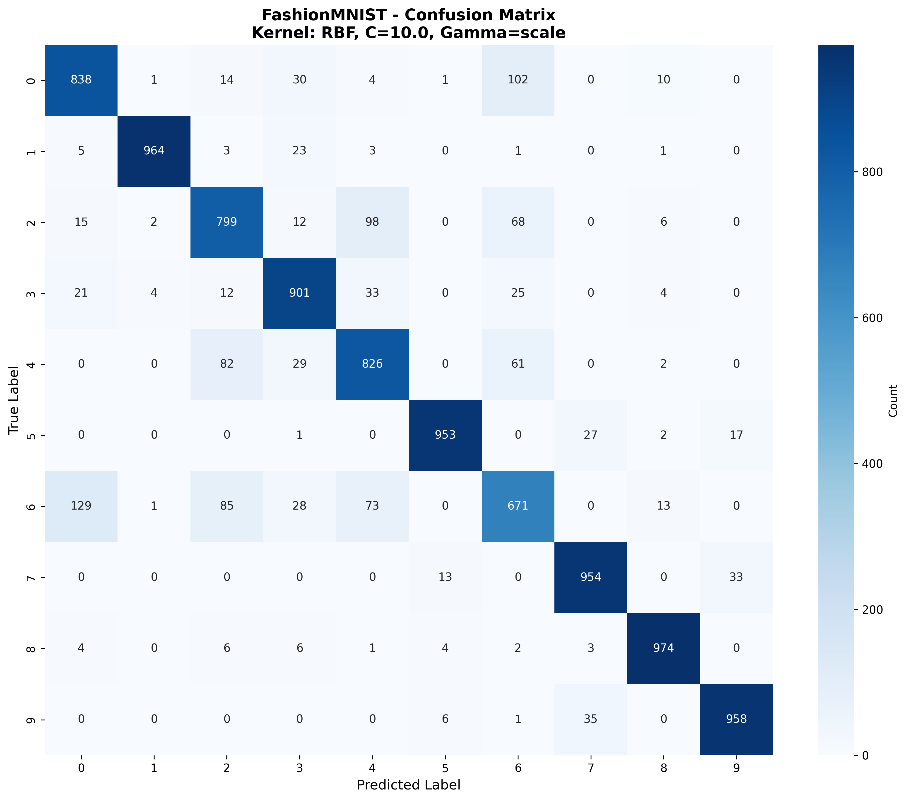

Performance, Accuracy and Compute Analysis on MNIST & FashionMNIST
This repository presents a comprehensive experimental study comparing classical machine learning and deep learning approaches on two benchmark datasets: MNIST and FashionMNIST.
The study investigates three critical aspects:
| Component | Description | Models |
|---|---|---|
| Q1(b) | Classical ML experiments | SVM with multiple kernels |
| Q1(a) | Deep learning experiments | ResNet-18, ResNet-50 |
| Q2 | Compute & efficiency analysis | CPU vs GPU comparison |
ML-DL-Ops-Assignment-1/
│
├── 📊 Data Files
│ ├── mnist_resnet_results.csv
│ ├── fashion_mnist_resnet_results.csv
│ ├── svm_mnist_results.csv
│ ├── svm_fashionmnist_results.csv
│ └── q2results.csv
│
├── 📈 Visualizations
│ ├── ResNet Results/
│ └── SVM Results/
│
└── 📄 Documentation
└── README.mdDescription: Handwritten digit recognition (0-9)
Size: 70,000 grayscale images (28×28 pixels)
Classes: 10 digit classes
Description: Fashion product classification
Size: 70,000 grayscale images (28×28 pixels)
Classes: 10 fashion categories
| Split | Percentage | Purpose |
|---|---|---|
| Training | 70% | Model training |
| Validation | 10% | Hyperparameter tuning |
| Test | 20% | Final evaluation |
Implementation: sklearn.svm.SVC
Kernels Explored: RBF, Polynomial
Preprocessing Pipeline:
Raw Images → Flatten → Standard Scaling → PCA (50 components) → SVM| Model | Layers | Parameters | FLOPs |
|---|---|---|---|
| ResNet-18 | 18 | ~11.2M | ~1.8G |
| ResNet-50 | 50 | ~23.5M | ~4.1G |
Metrics Tracked:

Figure 1: Training and validation accuracy/loss curves for ResNet-18 and ResNet-50 on MNIST

Figure 2: Training and validation accuracy/loss curves for ResNet-18 and ResNet-50 on FashionMNIST

Figure 3: Test accuracy heatmap across model-optimizer combinations on MNIST

Figure 4: Test accuracy heatmap across model-optimizer combinations on FashionMNIST

SVM kernel comparison on MNIST

SVM kernel comparison on FashionMNIST

Best SVM on MNIST

Best SVM on FashionMNIST
| Device | MNIST Training Time | FashionMNIST Training Time | Speedup |
|---|---|---|---|
| CPU | ~850ms/epoch | ~920ms/epoch | 1× (baseline) |
| GPU | ~75ms/epoch | ~85ms/epoch | ~11× faster |
| Model | Parameters | FLOPs (per sample) | Accuracy Trade-off |
|---|---|---|---|
| ResNet-18 | 11.2M | 1.8G | Higher (short training) |
| ResNet-50 | 23.5M (+110%) | 4.3G (+139%) | Lower (needs more epochs) |
SVM (RBF): ~97.5% accuracy
ResNet-18: ~98.8% accuracy
Insight: Deep learning shows moderate gains on simple datasets
SVM (RBF): ~86% accuracy
ResNet-18: ~91%+ accuracy
Insight: Deep learning excels on complex datasets
# Clone the repository
git clone https://github.com/yourusername/ML-DL-Ops-Assignment-1.git
cd ML-DL-Ops-Assignment-1
# Create virtual environment
python -m venv venv
source venv/bin/activate # On Windows: venv\Scripts\activate
# Install dependencies
pip install torch torchvision scikit-learn pandas matplotlib seaborn ptflops tqdm# Run SVM experiments
python svm_experiments.py
# Run ResNet experiments
python resnet_experiments.py
# Run compute analysis
python compute_analysis.py| Scenario | Recommended Approach |
|---|---|
| Quick baseline | SVM with RBF kernel |
| Production accuracy | ResNet-18 + Adam |
| Maximum performance | ResNet-50 + extended training |
| Limited compute | SVM or shallow CNN |